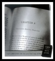
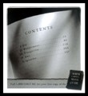

许久没有阅读任何的小说、文字的东西，即使看见的也都是网络上的那些，也就是说许久没有心情手把一本书，深深陷入地阅读。记得18岁的时候读到江宛柳的小说《我在寻找那颗星》，一边读一边不能自控的抽泣，最后抑制不住自己的声音放声大哭。那种没有任何复杂因素影响的感情想来是多么的让人怀念...彷如一张白纸，全身心投入地接受一切能够接受的色彩，如今我的那张人生的图画究竟是怎样的了？我也无法告诉我自己一二。



2002年NO.5的《收获》有一篇短篇小说为《老虎再见》，想转载部分内容如下：
“要是我们那天不去木偶剧场，逯就不会怀孕。这样说似乎有些夸张，但事实就是如此。法国人圣隘克苏佩里说，如果有一只羊，吃了或者没有吃一朵玫瑰花，整个宇宙都会改变。我对这种说法起初是很怀疑的，觉得里面有一种诡秘的意味，可是回想起那天的经历，我承认人的命运真的很偶然。
就单说做决定这件事吧，我们需要做决定的事何止千万，认谁做大哥，娶谁做媳妇，这类头等大事就不用说了，从穿何种颜色的衬衫，到抄哪条路去上班，哪件事情不要我们自己拿主意呀，说得更细些吧，就说此时此刻，我决定早早上床睡觉，一个人睡，而你决定继续读我的这段句子，想弄明白我究竟是在讲道理呢，还是在说梦话。这时候他（假设你是女读者）见你沉浸在阅读中，就决定趁此空隙点支烟抽抽，也好清醒清醒自己的脑子，或者他（假设你不幸是男的）见你看书如此的投入，决定悄悄给另一个相好发条甜蜜的短消息。当然了，也可能你是独自阅读，这再好不过了，因为你很可能会决定读完我的整篇小说的，而你一旦这样决定，又会对我的其他小说产生兴趣。等等。
世上的每个决定，都既是上个决定的结果，又是下个决定的开始。
还是回过头来看关于羊吃玫瑰或者不吃玫瑰的那件是吧。
要是羊吃了玫瑰，世界会怎样呢？
羊会长得更壮实，更具有交配能力，当然也就会生出更多的小羊羔。
那么要是羊不吃玫瑰呢？
玫瑰会在风中吐露芬芳，引起无数狂蜂浪蝶，将花粉传到更多的地方，从而在更多的地方长出玫瑰。
羊吃玫瑰或者不吃玫瑰，世界确实是会发生变化的，要么羊多，要么花多，你能说这不是变化吗？至于你是希望羊多呢，还是希望花多，那又是另一个问题了，那个问题与趣味的高低有关，这里不做探讨。反正这是我对羊与玫瑰这个命题的粗浅理解。
我们每日就这样磕磕绊绊地在各种决定中穿行，有时为拿到最后一张卧铺车票而庆幸，有时又感到沮丧，居然贪图便宜买回一双漏水的破鞋。应该说我和逯的思维方式是有很大差别的，毕竟性别不同嘛。我们常常作出相反的抉择，比如逛大街吧，我朝北走，她却偏要往南，我要坐306，她要坐305，我想买一块5块一盒的肥皂，她坚持要十五块的那种，我说我穿四十码的鞋合适，她说四十二码才气派呢，我想拨3850643向朋友讨教，她执意要拨3460583，说另一个朋友在这方面更在行，等等。
无数的分歧象数杈一样横在我们面前，拨开一拨又是一拨，犹如迷失在丛林深处，见不着两人都愿意行走的路途，不去想也罢，想起来真是绝望得很。这些分歧表面号丧看似乎只跟数字有关，其实涉及到的是不同的人生观。这个问题很艰深，也不在这里探讨。
说来也奇怪，那天不知是谁首先提起来去看木偶戏，另一方竟然觉得这主意不错！
… …
有一次我和逯因为一件小事发生争吵——她眼睛近视怕光，老喜欢拉上窗帘，屋里黑呼呼的，我呢，自认为喜欢光明，时常随手就撩起窗帘，就因为这么一件小事，结果我们爆发可剧烈的争吵。
盛怒中不知是逯还是我，可能是我吧，把一个玻璃瓶砸得粉碎，犹如打开了潘多拉的盒子，向床底、柜底，甚至高跟鞋的鞋底，其中两颗更是武功高强，“嗖”的便逃出窗外，流浪去了。
我和逯望着那两颗胶囊出逃的方向，好一阵发愣，心中充满艳羡，两人不约而同拥至窗前，探头朝下寻觅，哪里还有人家的踪影呀，早就跑到天边外喽。只有我们跑不掉，呆呆地望着窗外。窗外永远穿梭不停的陌生人。
它们出逃了，我们的气也消了。
那次做爱后，天还未黑透。逯偎在我胸前，望着窗外灰色的云朵说话。她说得细声细气，很慢。我抚摸她暗黄的头发，不时接上一句，也很慢。
——你说，我们会结婚吗？她看着云说。
——有时候，我想这件事，想得脑袋发疼。还是她说。
——好久没看电影了。我插了一句。
——我觉得，女人最终还是要成家的。她说。
——据说有一部香港片，也在谈论关于结婚还是不结婚。我说。
——哦，我知道。是一个有妇之夫和一个有夫之妇的故事。她说。
——他们都有家，结婚前，还得离。她又说。
——都一样，想离，也先得结。我说。
——想到以后还得离，谁还愿意结呀。她说。
——那些离的人，当初结婚时，有谁是包办的呢。都是自愿的。我说。
——你说，好好的感情，为什么会有变化？她像是自问。
——生活太单纯，没有考验，也不是好事。她又说。
——没想到，到时候就知道。我说。
——到什么时候？她问/
——走到哪里，说哪里的话吧。我说。
她不再看云。云不见了，天边只有几片黄昏的余光。她看着那些余光。
——你说，结婚是为了什么？她忽然又问。
——原因可多了。为了房子，为了孩子，为了面子……
——就没有为了爱的？她又问。
——每个人都会说自己是为了爱。
——你觉得呢？
——有。少。我说。
——只要你相信有，就行了。她轻吁一声。
良人一阵沉默。
过了一会儿，她又继续说：
——有时我还会想到做母亲。可能是女人的感觉吧，怀抱幼小的生命，跟抱猫抱狗不一样。那可是一个小人儿。
——七点了，看不看电影？我说。
——看吧。其实我看过了，挺伤感的。
——好看的电影，总是有些伤感。我说。
——咦，刚才我吃药了吗？她问。
我伸手抓过一把捡起来的胶囊，在她面前亮了亮。
——吓死我了。
她送了口气，用手捋了捋头发。她的头发原来不太黑，颜色弱弱的，为了掩盖这一点，她索性把头发染了，染得不太黄，但很性感，软软的，就象宠物腹部的茸毛。
——我有时会梦见，我忘了吃药。她说。
……不过话又说回来，一个女人若是不敏感，也不太好玩，你说今天大耳朵念文件，把“如火如荼”念成了“如火如茶”，笑死人了。她就会认真地连着追问：真的？谁死了？谁笑死了？遇上这样的女人，该是多么无趣。所以嘛，我还是希望女人敏感些好，哪怕为此多吃些苦头。
 —把这首钢琴曲送给我自己。
—把这首钢琴曲送给我自己。